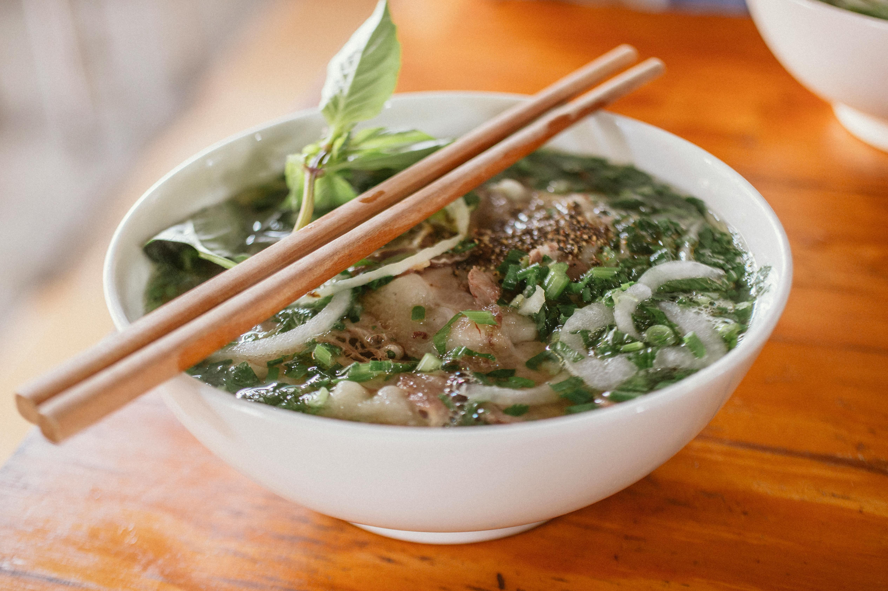

Home
Pho

Provided by
Pexels
Description
Bowl of beef noodle soup
Ingredients
- Pho noodles
- Beef bone
- Beef brisket
- Encrusted beef
- Beef shank
- Beef ball
- Beef flank
- Cinnamon
- Garlic
- Onion
- Star anise
- Sugar
- Salt
- Fish sauce
- Beansprouts
- Basil
- Hoisin sauce
- Chilli sauce
- Chilli
- Water
- Clean all the beef ingredients with salt water
- Boil the beef ingredients in water to release its dirt
- Heat the garlic, cinnamon, and onion on a pan for aroma
-
Put the pan ingredients and star anise into a pot and then add all the
beef on top, and fill with water
- Boil for six hours
- Season the pot with salt, sugar, and fish sauce
-
Serve the dish with pho noodles, all kinds of diced beef, diced onions,
diced green onion, hoisin sauce, chilli sauce, diced chilli with a side
of beansprouts and basil